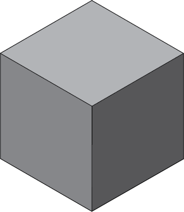
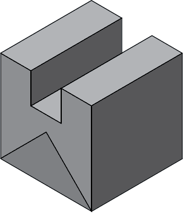
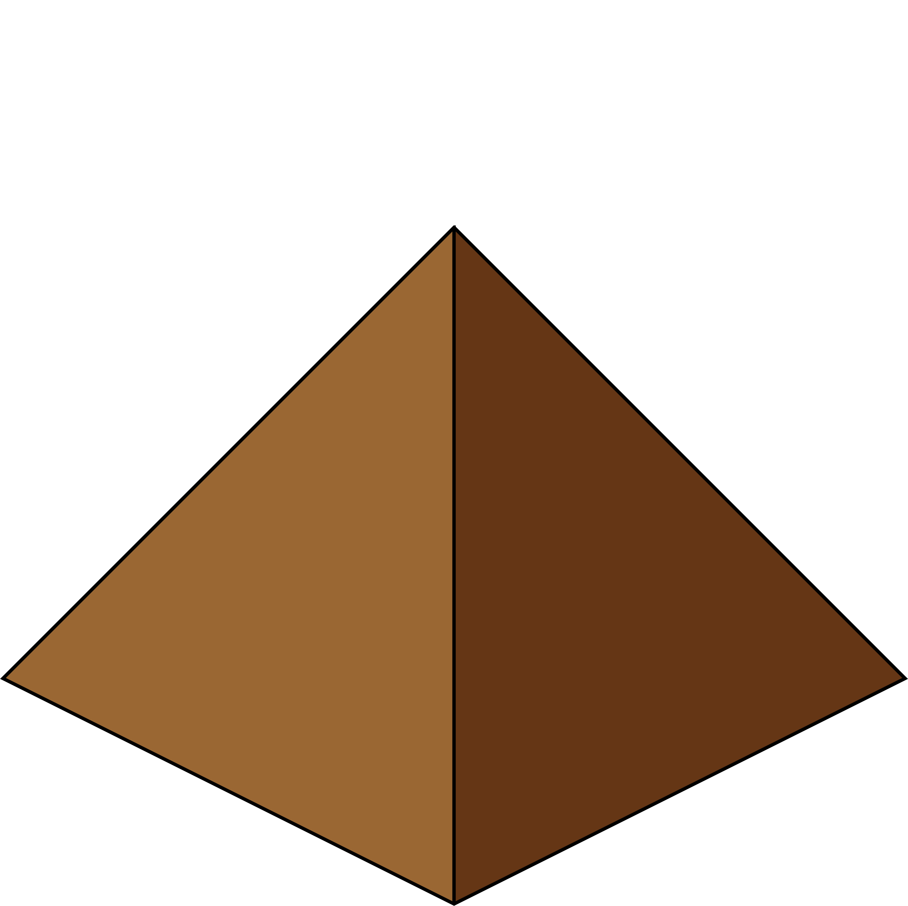

Examples of Project Artwork (also check Audio)
-

A simple grey cube. Stack them next to each other to create more powerful structures like walls, turrets, and more!
-

A basic grey wall. They can take a beating from evil pyramids, but don't expect them to win any fights on their own!
-
A restful moment embodied by a pause symbol. Used and animated during the pause menu of a student game.
-

A hostile brown pyramid. I programmed the behavior of these little guys. They ran down a line and tried to beat up your base.
All of the above images were used in a student project for DigiPen, showing willingness to learn tools outside my area of expertise such as Adobe Illustrator. Every game team member has to take up odd jobs and be proactive if they want to produce a good game!
The name of this game project was "Refactory" - it was built on the idea that you can place blocks on a grid (including stacking them for a kind of third dimension) and that the pattern you place them down determines what kind of structure they become. They'll fuse together or split apart into turrets, walls, slowing towers, etc. I had a major role in designing the game, and the enemy/structure interactions as well as user interface were designed by me. In addition, I had to learn the C++ interface for FMOD in order to implement an audio engine for the game, and all the sounds in the game were also made by me. I did not, however, create the wonderful parts of the game engine or the graphics engine. That was done by my wonderful teammates.
In the Enemy Logic code I wrote, the enemies had a variety of flag fields which I used like switch statements. Each bit had some meaning, for example movement could be mostly a constant pace, or it could be a strongly growing acceleration. In order to deal with repeated collisions between enemies and structures, the enemies were made to bounce backwards after a collision.
Sound is tricky to figure out - first I had to figure out what sounds I wanted within the game. The money generation sound is my recording of dropping a Hollow Earth Expedition style point chip (it's like a poker chip) onto a wooden table. There were quite a few issues with too many sounds being played at once. The audio engine is its own separate thing - I implemented FMOD in C++ and created a pointer to the engine when the game first starts up so that it can play music as the rest of the game loads up. One of the troubles in development is that you don't know how long the final load times will be, and that's why it's important to make sure that your music has plenty of ability to either keep repeating as well as fade away when it's time for the next theme to enter in.